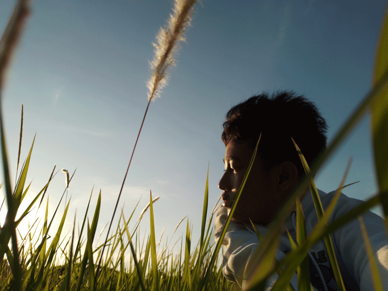

Digital
Traditional
Graphic Design
Videos
Photography
About Me
Digital
Traditional
Graphic Design
Videos
Photography
About Me

Akhmad Zaky Maulana is an Indonesian student that currently studying Visual Communication Design on SMK Al-Muhtadin.
He’s a photographer, artist, musician, and a graphic designer. His interest in art started when he was 11 years old. It’s all started when he’s started his little project making a Minecraft head avatar.
Why he decided to pursue art? It’s because of his friend that can draw.